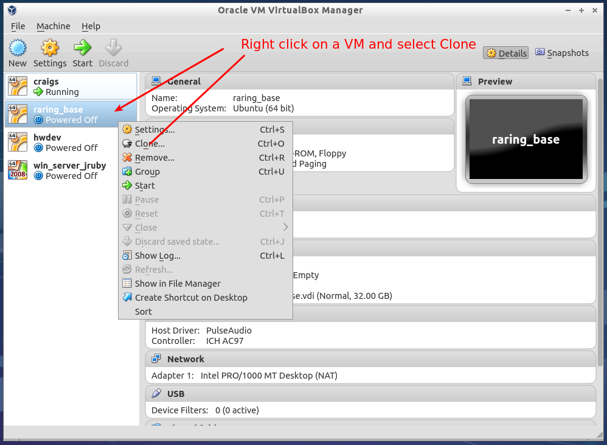
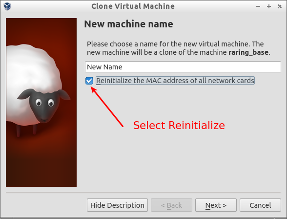

ubuntu 12.04 mini.iso
32-bit PC (x86)
Ubuntu 12.04 "Precise Pangolin" Minimal CD 27MB
Software selection
[*] OpenSSH server
...
[*] PostgreSQL database
Edit /etc/network/interfaces
auto eth0
iface eth0 inet static
address 10.10.10.133
netmask 255.255.0.0
gateway 10.10.10.100
dns-nameservers 10.10.10.111
Generate key for first user
$ ssh-keygen
Install openssh-server
$ sudo apt-get install openssh-server
On workstation, copy public key to server for ssh login
$ ssh-copy-id username@host
Compiler and build tools
sudo apt-get install build-essential checkinstall libtool automake uuid-dev
vim,tmux,git
sudo apt-get install vim tmux git
Personalize git
git config --global user.name "Your Name Here"
# Sets the default name for git to use when you commit
git config --global user.email "your_email@example.com"
# Sets the default email for git to use when you commit
Install the rsa public key on my github account
Then clone the vim config and install
cd
git clone git@github.com:CootCraig/dotfiles_again.git
cd ~/dotfiles_again/linux
bash install.sh
Ubuntu documentation here
Install the needed packages
$ sudo apt-get install cifs-utils winbind
Edit /etc/nsswitch.conf
hosts: files dns
to
hosts: files wins dns
Sample entry in /etc/fstab
$ cat /etc/fstab
# /etc/fstab: static file system information.
...
//gcs3/f$/GIT /media/gcsgit cifs rw,noauto,credentials=/home/craig/gcsww_canderson.txt,uid=craig 0 0
Sample credential file
username=a_user
password=a_password
domain=a_domain
The mount command
$ sudo mount /media/gcsgit
Install a Java for JRuby
JDK 8 Early Access Releases can be grabbed from here
I extracted the JDK tarball and made a symbolic link
$ ls -l /opt/java
total 4
lrwxrwxrwx 1 root root 18 Mar 23 22:05 jdk -> /opt/java/jdk1.8.0
drwxr-xr-x 8 500 143 4096 Mar 7 04:38 jdk1.8.0
Edit /etc/environment to add path for java command
PATH="/opt/java/jdk/bin:/usr/local/sbin:/usr/local/bin:/usr/sbin:/usr/bin:/sbin:/bin:/usr/games"
sudo resets PATH, override with file in /etc/sudoers.d
Defaults exempt_group=craig
Standalone ruby-build, chruby
ruby-build from here
git clone git://github.com/sstephenson/ruby-build.git
cd ruby-build
Set PREFIX="/opt/ruby-build" and run install.sh
Install rubies to default location for chruby
sudo /opt/ruby-build/bin/ruby-build 1.9.3-p392 /opt/rubies/ruby-1.9.3-p392
sudo /opt/ruby-build/bin/ruby-build jruby-1.7.3 /opt/rubies/jruby-1.7.3
Install chruby from here
Follow the installation and setup instructions
Better to do checkinstall instead of make install
Configure system wide and set default
$ cat /etc/profile.d/chruby.sh
[ -n "$BASH_VERSION" ] || [ -n "$ZSH_VERSION" ] || return
source /usr/local/share/chruby/chruby.sh
source /usr/local/share/chruby/auto.sh
chruby jruby-1.7.3
Install supervisor with python-pip
sudo apt-get install python-pip
sudo pip install supervisor
Create a directory for supervisor tasks
sudo mkdir /etc/supervisor.d
create an init script for supervisord
cd /etc/init.d; sudo cp skeleton supervisord
$ diff skeleton supervisord
8,10c8,10
> # Short-Description: Supervisor: A Process Control System
> # Description: Supervisor is a client/server system that allows its users to monitor
> # and control a number of processes on UNIX-like operating systems.
13c13
> # Author: Craig Anderson
19d18
<
22,26c21,25
> DESC="Supervisor: A Process Control System"
> NAME=supervisord
> DAEMON=/usr/local/bin/$NAME
> DAEMON_ARGS="--configuration /etc/supervisord.conf"
> PIDFILE=/tmp/$NAME.pid
Create the supervisor config file
$ echo_supervisord_conf > /etc/supervisord.conf
$ diff supervisord.conf /etc/supervisord.conf
13,14c13,14
< ;username=user ; (default is no username (open server))
< ;password=123 ; (default is no password (open server))
---
> username=craig ; (default is no username (open server))
> password=banana ; (default is no password (open server))
17,19c17,19
< ;port=127.0.0.1:9001 ; (ip_address:port specifier, *:port for all iface)
< ;username=user ; (default is no username (open server))
< ;password=123 ; (default is no password (open server))
---
> port=*:9001 ; (ip_address:port specifier, *:port for all iface)
> username=craig ; (default is no username (open server))
> password=banana ; (default is no password (open server))
22c22
< logfile=/tmp/supervisord.log ; (main log file;default $CWD/supervisord.log)
---
> logfile=/var/log/supervisor/supervisord.log ; (main log file;default $CWD/supervisord.log)
31c31
< ;user=chrism ; (default is current user, required if root)
---
> user=daemon ; (default is current user, required if root)
138,139c138,140
< ;[include]
< ;files = relative/directory/*.ini
---
> [include]
> files = /etc/supervisor.d/*.ini
Create the log directory
$ sudo mkdir /var/log/supervisor
$ sudo chown daemon:daemon /var/log/supervisor
Enable the init script
$ sudo update-rc.d supervisord defaults
select jruby with chroot
$ chruby jruby-1.7.3
$ chruby
* jruby-1.7.3
ruby-1.9.3-p392
install the gem
$ gem install torquebox-server
fetching: torquebox-core-2.3.0-java.gem (100%)
...
Successfully installed torquebox-core-2.3.0-java
Successfully installed torquebox-transactions-2.3.0
Successfully installed blankslate-2.1.2.4
Successfully installed torquebox-configure-2.3.0-java
Successfully installed parslet-1.4.0
Successfully installed edn-1.0.0
Successfully installed torquebox-messaging-2.3.0-java
Successfully installed torquebox-naming-2.3.0-java
Successfully installed torquebox-rake-support-2.3.0
Successfully installed torquebox-security-2.3.0-java
Successfully installed torquebox-web-2.3.0-java
Successfully installed torquebox-cache-2.3.0-java
Successfully installed torquebox-stomp-2.3.0
Successfully installed thor-0.17.0
Successfully installed torquebox-2.3.0
Successfully installed torquebox-server-2.3.0-java
16 gems installed
Start torquebox from supervisord
/etc/supervisor.d/torquebox.ini
[program:torquebox]
command=/home/craig/.gem/jruby/1.9.3/bin/torquebox run
redirect_stderr=true
stdout_logfile=/var/log/torquebox/torquebox.log
environment=PATH="/home/craig/.gem/jruby/1.9.3/bin:/opt/rubies/jruby-1.7.3/lib/ruby/gems/shared/bin:/opt/rubies/jruby-1.7.3/bin:/opt/java/jdk/bin:/usr/local/sbin:/usr/local/bin:/usr/sbin:/usr/bin:/sbin:/bin:/usr/games",GEM_HOME="/home/craig/.gem/jruby/1.9.3",USER=craig,RUBY_ENGINE=jruby,GEM_ROOT="/opt/rubies/jruby-1.7.3/lib/ruby/gems/shared",GEM_PATH="/home/craig/.gem/jruby/1.9.3:/opt/rubies/jruby-1.7.3/lib/ruby/gems/shared",RUBY_ROOT="/opt/rubies/jruby-1.7.3",RUBY_VERSION="1.9.3"
$ cd /etc/postgresql/9.1/main
$ diff postgresql.conf.orig postgresql.conf
62a63
> listen_addresses = '*'
$ sudo diff pg_hba.conf.orig pg_hba.conf
92c92
< host all all 127.0.0.1/32 md5
---
> host all all 10.10.0.0/16 md5
sudo -u postgres psql template1
ALTER USER postgres with encrypted password 'your_password';
$ sudo /etc/init.d/postgres restart
Tue May 21 12:27:22 MDT 2013 - I installed Lubuntu 13.04 with desktop on my HP Envy 17 notebook. An attempt to use KVM/Qemu was abandoned, because the guest video was flakey and crashing the guest VM's.
I installed Lubuntu 13.04 again and then installed VirtualBox. VirtualBox guests are working nicely.
The VirtualBox admin will clone VM's. Initiate the clone.
Make sure to have all network interface get a new MAC
Edit /etc/hostname and /etc/hosts
sudo rm /etc/ssh/*key*
sudo dpkg-reconfigure openssh-server
rm -rf ~/.ssh
ssh-keygen
In a Linux guest, use the following command:
mount -t vboxsf [-o OPTIONS] sharename mountpoint
To mount a shared folder during boot, add the following entry to /etc/fstab:
sharename mountpoint vboxsf defaults 0 0